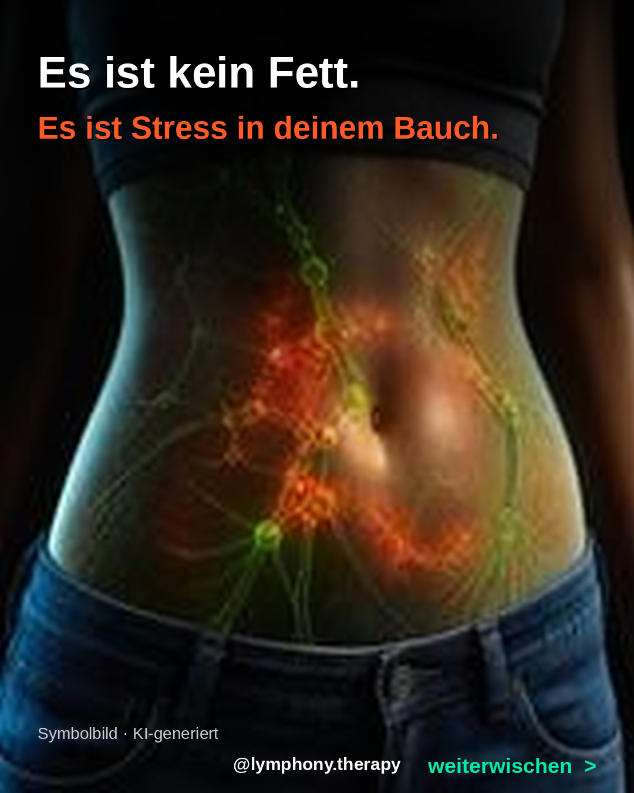
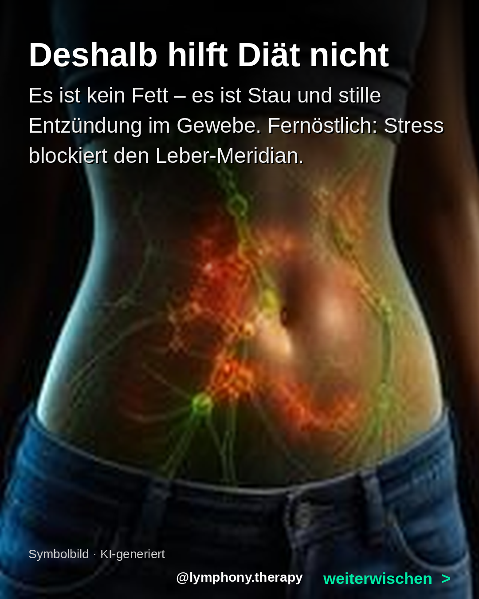
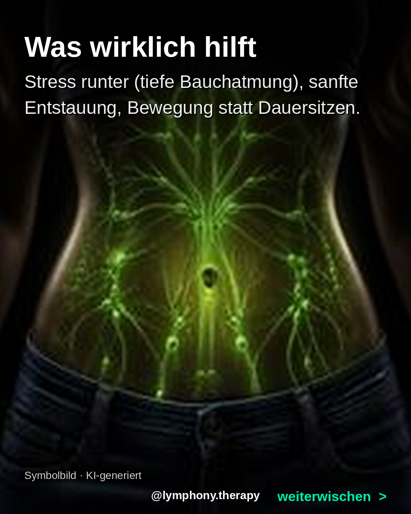

Bilder lange gedrueckt halten zum Speichern



Es ist kein Fett. Es ist ein Blähbauch durch Stress.
Morgens flacher Bauch, abends aufgebläht – obwohl du nichts falsch gegessen hast?
Chronischer Stress treibt dein Cortisol hoch → Wassereinlagerungen + gebremste Bauch-Lymphe. Dein größtes Lymph-Reservoir sitzt im Bauchraum (Mesenterium). Fernöstlich: Stress blockiert den Fluss im Leber-Meridian – Stagnation und Schwellung.
Deshalb hilft weder Diät noch harter Bauch-Workout – es ist kein Fett, es ist Stau + stille Entzündung.
Was wirklich hilft: Stress runter (tiefe Bauchatmung), sanfte Entstauung, Bewegung statt Dauersitzen.
Schreib BAUCH in die Kommentare – ich schick dir meine 3-Minuten-Routine gegen den Blähbauch.
#cortisolbelly #blähbauch #bloating #wassereinlagerungen #cortisol #stress #lymphe #lymphdrainage #darmgesundheit #lymphony #frauengesundheit #mesenterium #entstauung #leichtigkeit #ganzheitlicheheilung